📋 Guia Rápido
📖 Resumo Executivo
O FoxyProxy é uma extensão para Firefox que simplifica o gerenciamento de proxies.
Com apenas alguns cliques, é possível encaminhar todo o tráfego do navegador para ferramentas como Burp Suite, OWASP ZAP, Fiddler e Charles Proxy.
Neste laboratório, vamos configurar o FoxyProxy e validar sua integração com o Burp Suite.
✅ Burp Suite
✅ OWASP ZAP
✅ Análise de Tráfego
✅ Pentest Web
✅ Testes de Segurança
✅ Interceptação HTTP/HTTPS
🏗 Arquitetura
Antes de iniciar a configuração, é importante entender como o FoxyProxy se integra ao Burp Suite.
🌐 Firefox
Navegação Web
🦊 FoxyProxy
Gerenciamento de Proxy
🛠 Burp Suite
Interceptação
🌍 Aplicação Web
Destino
O FoxyProxy
não intercepta tráfego.
Sua função é encaminhar as requisições do navegador para ferramentas especializadas, como o Burp Suite.
⚙ Instalação
O processo de instalação é extremamente simples.
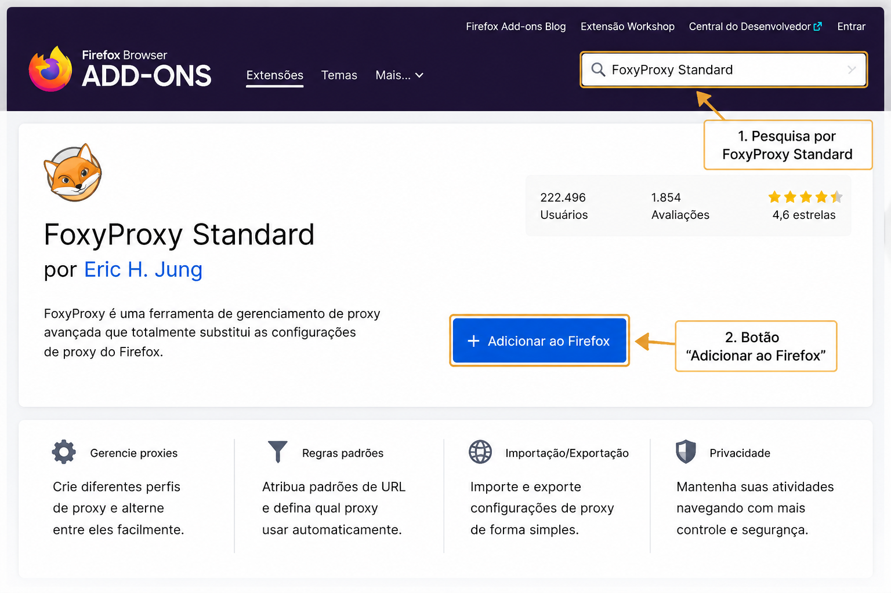
Figura 1 - Instalação da extensão FoxyProxy Standard no Firefox.
🔧 Configuração do Burp Suite
Antes de configurar o FoxyProxy, precisamos verificar o Listener do Burp Suite.
No Burp Suite, acesse:
Por padrão, o Burp Suite utiliza o endereço 127.0.0.1 na porta 8080.
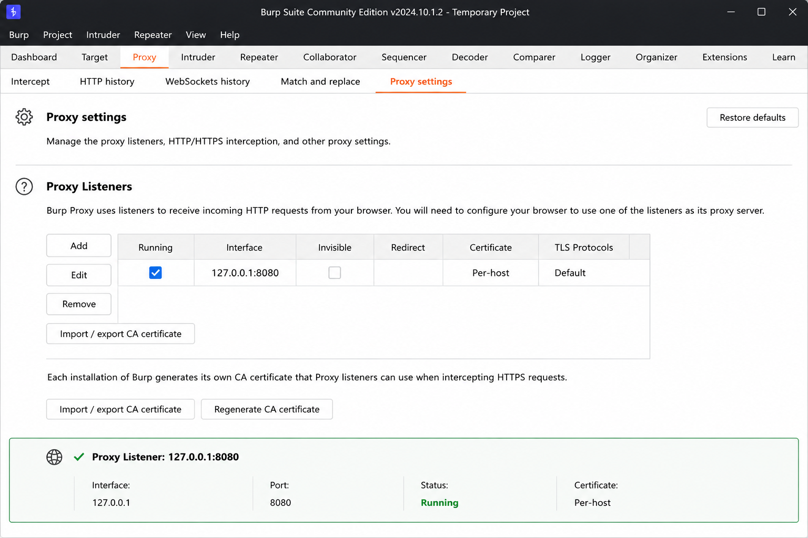
Figura 2 - O Proxy Listener é responsável por receber as requisições encaminhadas pelo FoxyProxy. Neste exemplo, o Burp Suite está escutando na interface local (127.0.0.1) utilizando a porta 8080.
Caso o Listener não esteja configurado ou esteja utilizando outra porta, o FoxyProxy não conseguirá encaminhar corretamente o tráfego do navegador para o Burp Suite.
🦊 Configurando o FoxyProxy
Agora vamos criar um perfil de proxy para integração com o Burp Suite.
Após salvar, o FoxyProxy estará pronto para encaminhar as requisições para o Burp Suite.
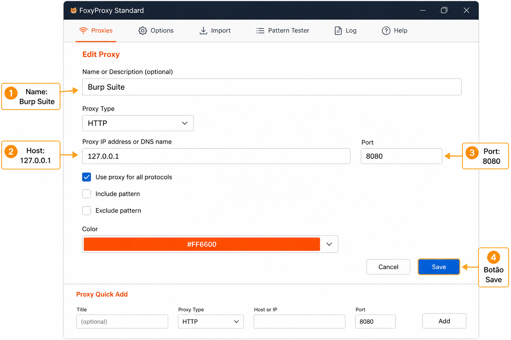
Figura 3 - Configuração do perfil Burp Suite no FoxyProxy utilizando o endereço 127.0.0.1 e a porta 8080.
O Host 127.0.0.1 indica que o Burp Suite está sendo executado na própria máquina.
A porta 8080 deve corresponder à porta configurada no Proxy Listener do Burp Suite.
Após salvar a configuração, o perfil estará disponível para encaminhar o tráfego do Firefox para o Burp.
🚦 Interceptando Requisições
Até este momento, utilizamos o Burp Suite apenas para visualizar o tráfego gerado pelo navegador.
Agora iremos utilizar uma das funcionalidades mais conhecidas da ferramenta: a interceptação de requisições.
Com esse recurso, é possível analisar e modificar informações antes que elas sejam enviadas ao servidor.
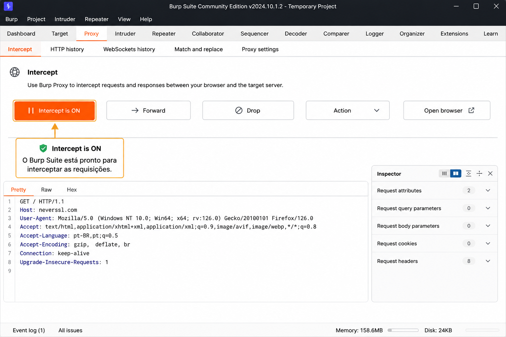
Figura 4 - O modo Intercept está habilitado. Neste estado, as requisições enviadas pelo navegador são temporariamente interrompidas antes de serem encaminhadas ao servidor.
Quando o botão Intercept is ON está ativo, o Burp Suite assume o controle das requisições HTTP e HTTPS, permitindo sua inspeção e modificação antes do envio.
Esse recurso é amplamente utilizado durante análises de segurança, validação de controles de acesso e testes de aplicações web.
📝 Primeira Requisição Interceptada
Após ativar o modo Intercept, acesse novamente o site de testes.
A requisição não seguirá imediatamente para o servidor.
Ela ficará temporariamente retida no Burp Suite.
GET / HTTP/1.1 Host: neverssl.com User-Agent: Mozilla/5.0
Nesse momento, temos controle total sobre a requisição.
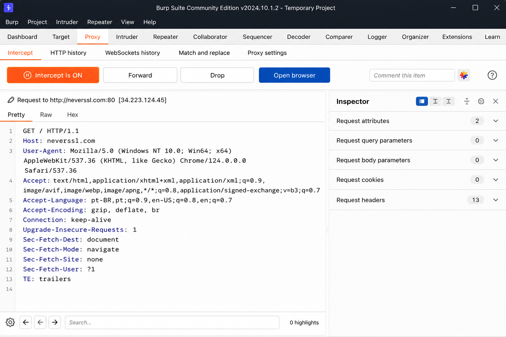
Figura 5 - Requisição HTTP interceptada pelo Burp Suite antes de ser enviada ao servidor. Observe os campos Host e User-Agent disponíveis para análise e modificação.
"GET /" indica uma requisição para a página principal do site.
"Host: neverssl.com" identifica o servidor de destino.
"User-Agent: Mozilla/5.0" informa ao servidor qual navegador está realizando a requisição.
Todos esses campos podem ser analisados ou alterados antes do envio utilizando o recurso de interceptação do Burp Suite.
✏ Modificando o User-Agent
Uma das alterações mais simples é modificar o cabeçalho User-Agent.
Originalmente a requisição contém:
User-Agent: Mozilla/5.0
Altere para:
User-Agent: PentestLab
Essa alteração permite verificar como aplicações tratam diferentes clientes ou dispositivos.
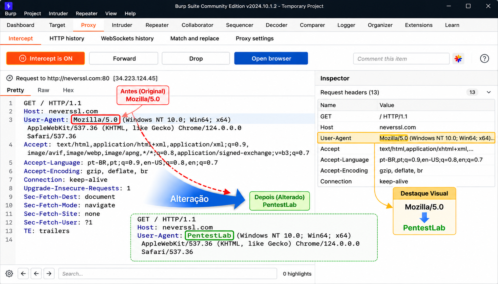
Figura 6 - Alteração do cabeçalho User-Agent utilizando o recurso de interceptação do Burp Suite. A requisição original foi modificada antes do envio ao servidor.
Valor original: Mozilla/5.0
Valor alterado:PentestLab
Essa modificação demonstra como o Burp Suite permite editar requisições HTTP em tempo real antes que elas sejam processadas pela aplicação.
Em cenários de Pentest, alterações semelhantes são utilizadas para validar controles de acesso, regras de negócio e mecanismos de autenticação.
➡ Encaminhando a Requisição
Após concluir as alterações desejadas, clique em:
O Burp Suite enviará a versão modificada da requisição para a aplicação.
A partir desse momento, o servidor responderá com base nos dados alterados.
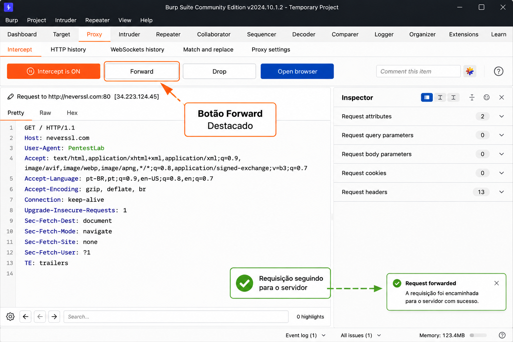
Figura 7 - Após concluir a análise ou modificação da requisição, o botão Forward permite encaminhar a mensagem para o servidor de destino.
A requisição deixa o estado de interceptação e segue normalmente para o servidor.
Caso tenha sido modificada anteriormente, o servidor receberá exatamente a versão alterada da requisição.
Essa funcionalidade permite validar como aplicações respondem a parâmetros, cabeçalhos e cookies manipulados durante um teste de segurança.
A capacidade
de modificar requisições
permite validar
controles de segurança,
regras de autorização
e mecanismos
de validação
implementados
pela aplicação.
Essa é uma das atividades
mais comuns
durante testes
de segurança web.
🧪 Primeiro Teste
Com o FoxyProxy configurado e o Burp Suite em execução, podemos realizar nosso primeiro teste.
O objetivo é validar se o tráfego do Firefox está sendo encaminhado corretamente para o Burp.
🌍 Acessando neverssl.com
Para validar a configuração, acesse o endereço:
http://neverssl.com
O site neverssl.com é frequentemente utilizado em testes iniciais porque utiliza HTTP simples, eliminando questões relacionadas a certificados.
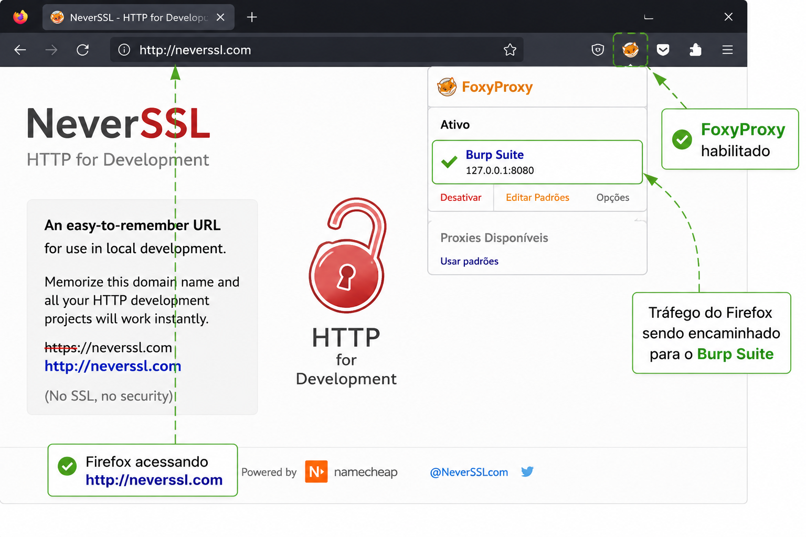
Figura 8 - Firefox acessando http://neverssl.com com o FoxyProxy habilitado e o perfil Burp Suite ativo (127.0.0.1:8080).
O endereço http://neverssl.com deve ser carregado normalmente.
O FoxyProxy deve exibir o perfil Burp Suite como ativo.
Todo o tráfego gerado pelo navegador será encaminhado para o Proxy Listener configurado em 127.0.0.1:8080.
Essa validação confirma que a integração entre Firefox, FoxyProxy e Burp Suite está funcionando corretamente.
📜 HTTP History
Após acessar o site, abra o Burp Suite e navegue até:
Uma nova entrada deverá aparecer na lista de eventos.
Isso confirma que o FoxyProxy encaminhou o tráfego do navegador para o Burp Suite.
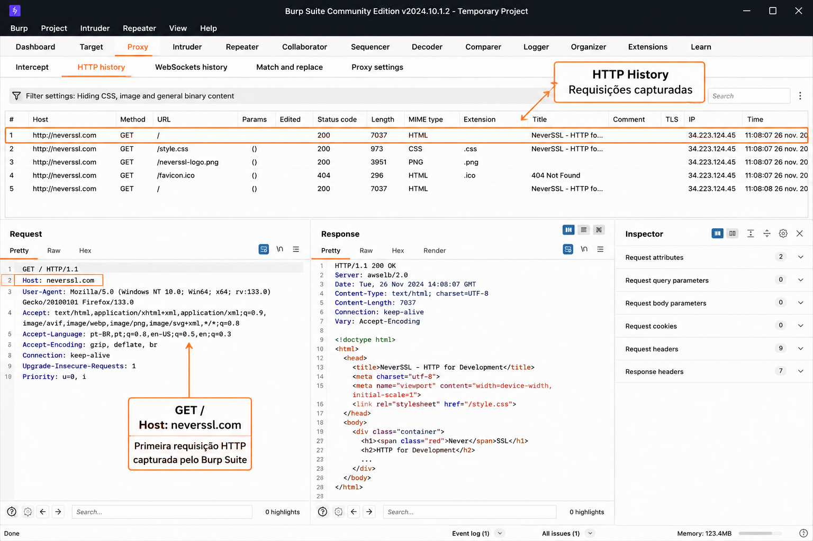
Figura 9 - A requisição GET para o site neverssl.com foi capturada com sucesso pelo Burp Suite e registrada no módulo HTTP History.
O módulo HTTP History armazena todas as requisições e respostas processadas pelo proxy.
Cada entrada registrada pode ser analisada individualmente, permitindo a inspeção de cabeçalhos HTTP, parâmetros, cookies e conteúdo retornado pela aplicação.
A presença da requisição GET /" com o host neverssl.com confirma que o FoxyProxy está encaminhando corretamente o tráfego do Firefox para o Burp Suite.
🚦 Validando o Redirecionamento
Quando a requisição aparece no HTTP History, podemos concluir que:
Essa validação é importante, pois servirá de base para as próximas etapas de interceptação e manipulação de requisições.
Se nenhuma requisição aparecer no HTTP History, verifique:
• FoxyProxy ativado
• Host configurado corretamente
• Porta 8080 configurada
• Burp Suite em execução
🔐 Testando Controle de Acesso
Um dos usos mais comuns do Burp Suite é a validação de mecanismos de autorização.
Em muitas aplicações, informações relacionadas ao perfil do usuário são transmitidas por meio de cookies ou parâmetros presentes na requisição.
Ao interceptar essas informações, podemos verificar como a aplicação reage a alterações realizadas pelo cliente.
🍪 Manipulando Cookies
Imagine um cenário em que um usuário comum acessa sua área pessoal.
A requisição original pode conter:
GET /profile HTTP/1.1 Cookie: role=user
Agora alteramos o valor do cookie antes de encaminhar a requisição.
GET /profile HTTP/1.1 Cookie: role=admin
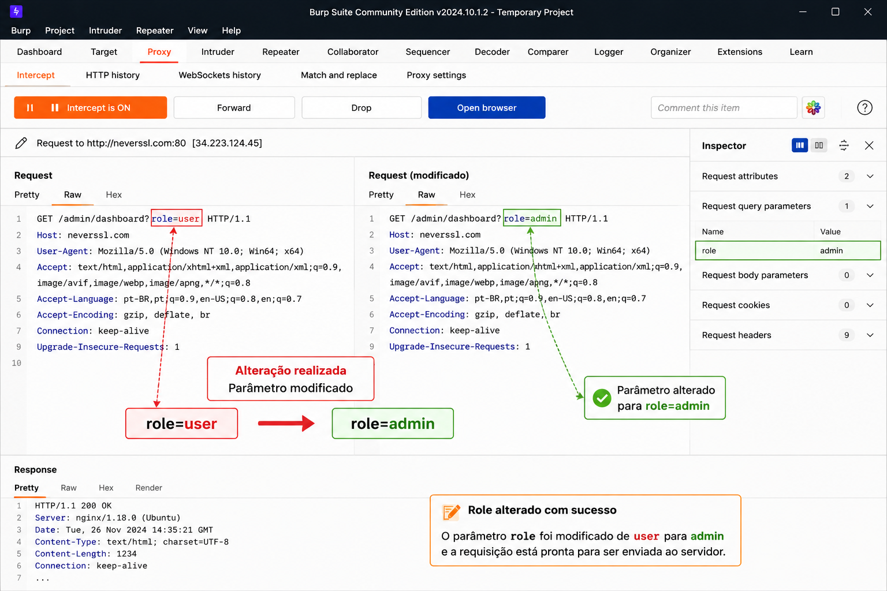
Figura 10 - Modificação do parâmetro role durante a interceptação da requisição. O valor original foi alterado de user para admin antes do encaminhamento ao servidor.
A alteração de parâmetros durante a interceptação permite avaliar se a aplicação valida corretamente os privilégios do usuário no lado do servidor.
Em aplicações seguras, a simples modificação de um parâmetro como role=admin não deve conceder privilégios adicionais.
Esse tipo de validação é frequentemente utilizado durante testes relacionados ao OWASP Top 10, especialmente na categoria Broken Access Control (A01).
🏴 Broken Access Control
Após encaminhar a requisição modificada, devemos observar o comportamento da aplicação.
Se o sistema permitir o acesso a funcionalidades administrativas apenas porque o valor do cookie foi alterado, isso pode indicar uma vulnerabilidade.
Esse tipo de falha continua figurando entre os riscos mais críticos em aplicações web.
🛡 Testando Cabeçalhos HTTP
Além dos cookies, também podemos modificar cabeçalhos HTTP enviados pela aplicação.
Alguns sistemas vulneráveis utilizam cabeçalhos fornecidos pelo cliente para tomar decisões de autorização.
Exemplos:
X-Forwarded-For: 127.0.0.1 X-Admin: true
A presença desses valores não significa, por si só, que existe uma vulnerabilidade.
Entretanto, eles podem auxiliar na identificação de falhas de implementação.
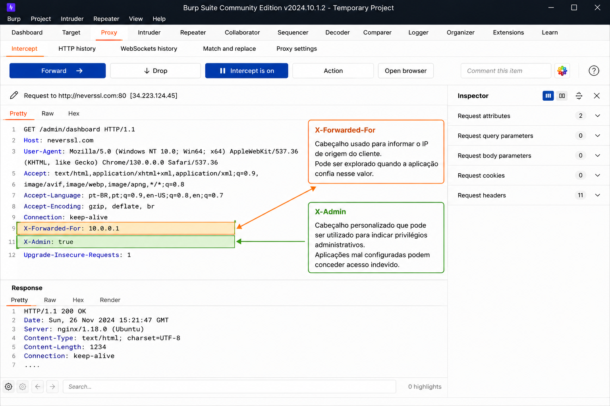
Figura 11 - Análise de cabeçalhos HTTP personalizados utilizando o Burp Suite. Os campos X-Forwarded-For e X-Admin podem influenciar o comportamento de aplicações mal configuradas.
Cabeçalhos HTTP personalizados podem ser utilizados por aplicações para transportar informações adicionais entre clientes, proxies e servidores.
O cabeçalho X-Forwarded-For é frequentemente utilizado para informar o endereço IP original do cliente quando existem proxies ou balanceadores de carga no caminho.
Já cabeçalhos como X-Admin podem ser utilizados por aplicações para habilitar funcionalidades específicas ou indicar perfis privilegiados.
Durante uma análise de segurança, é importante verificar se a aplicação valida essas informações adequadamente no lado do servidor.
🔍 Inspecionando Sessões
Outra atividade importante durante uma análise de segurança web é a avaliação dos cookies de sessão.
Exemplo:
Cookie: sessionid=abc123
Durante a análise, devemos verificar se mecanismos adicionais de proteção estão presentes.
A ausência desses controles pode aumentar a exposição da aplicação a diferentes ataques.
O objetivo desses testes não é explorar sistemas, mas validar se os controles de segurança implementados pela aplicação funcionam corretamente.
Toda atividade deve ser realizada apenas em ambientes autorizados e destinados a testes.
⚠ Problema Comum: HTTPS
Após configurar o FoxyProxy e o Burp Suite, é comum encontrar erros relacionados a certificados digitais.
Ao acessar aplicações HTTPS, o navegador poderá exibir mensagens de aviso ou bloqueio da conexão.
Isso ocorre porque o Burp Suite está realizando a interceptação TLS entre o navegador e a aplicação.
🌐 Firefox
🛠 Burp Suite
🌍 Aplicação Web
Como o navegador não confia automaticamente no certificado gerado pelo Burp Suite, o alerta é exibido.
🔒 Instalando o Certificado do Burp
Para permitir a inspeção segura de conexões HTTPS, é necessário instalar o certificado da Autoridade Certificadora (CA) do Burp Suite.
Após a importação, o navegador passará a confiar nas conexões interceptadas pelo Burp Suite.
📚 Resumo
Neste artigo, aprendemos a utilizar o FoxyProxy para integrar o Firefox ao Burp Suite.
O FoxyProxy é uma ferramenta simples, mas extremamente útil para qualquer profissional que trabalhe com análise e testes de aplicações web.
🚀 Próximo Artigo
Agora que o navegador já está integrado ao Burp Suite, podemos avançar para recursos mais avançados de organização e identificação visual de sessões.
🦊 FoxyProxy
Proxy e Interceptação
🦊⚡ PwnFox
Perfis e Containers
O PwnFox facilita a identificação visual de múltiplas sessões durante testes de segurança, sendo especialmente útil em cenários de controle de acesso e gestão de usuários.
➡ Próximo Artigo